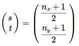

Aufgabe 4: Sphärisches Environment Mapping
{kind=link}
Innerhalb einer Gesamtaufgabe sollten verschiedener Arten des Environment Mappings implementiert werden.
Generell geht es beim Environmennt Mapping darum, spiegelnde Oberflächen zu rendern. Dazu wird eine Textur der Umgebung verwendet und auf die Oberfläche des zu rendernden Objekts gelegt. Diese Lösung ist einfacher zu realisieren als beispielsweise Raytracing, kann aber nicht ohne weiteres dynamische Umgebungen darstellen.
Im Folgenden wird genauer das sphärische Environment Mapping erläutert. Dies ist eine der am häufigsten verwendeten Arten von Environment Mapping.
Grundlage ist eine Textur bzw. ein Foto, bei dem die Umgebung beispielsweise mit Hilfe einer Chromkugel aufgenommen wird (Sphere Map). In diesem Beispiel wurde folgendes Bild verwendet:

In der webgl-Implementierung wird diese Textur dann auf entsprechende Objekte gerendert.
Dazu wird für jeden Pixel auf der Oberfläche der Reflektionsvektor im Bezug auf die Blickrichtung berechnet. Dieser Reflektionsvektor wird verwendet, um damit auf die Textur zuzugreifen.
Innerhalb der Vertex-Shader sind dazu keine besonderen Berechnungen notwendig.
Im Fragment Shader werden die Texturkoordinaten nach folgender Formel berechnet
Wichtig ist hierbei, dass die Normalen eine Länge von 1 haben, damit wird sichergestellt, dass jeder berechnete Punkt innerhalb der Sphere Map liegt.
Zusätzlich werden im Fragment Shader noch die Lambert- und Phong-Beleuchtungsmodelle verwendet.
Vertex-Shader
uniform mat4 projection;
uniform mat4 view;
uniform mat4 model;
uniform vec3 lightPosition;
uniform vec3 camera;
attribute vec4 position;
attribute vec3 normal;
varying vec3 normalW;
varying vec3 lightDirectionW;
varying vec3 cameraDirectionW;
varying vec4 positionW;
void main() {
positionW = position;
lightDirectionW = lightPosition - positionW.xyz;
cameraDirectionW = camera - positionW.xyz;
//Konvertierung in das Kamerakoordinatensystem
normalW = (model * vec4(normal, 0.0)).xyz;
normalW = (view * vec4(normalW, 0.0)).xyz;
gl_Position = projection
* view
* model
* position;
}
Fragment-Shader
precision highp float;
uniform vec3 color;
uniform sampler2D texture;
varying vec3 normalW;
varying vec3 lightDirectionW;
varying vec3 cameraDirectionW;
varying vec4 positionW;
vec3 lambert(vec3 normal,
vec3 light,
vec3 intensity,
vec3 reflectivity) {
return 0.1
* reflectivity
* intensity
+ reflectivity
* intensity
* max(0.0, dot(normal, light));
}
vec3 phong(vec3 normal,
vec3 eye,
vec3 light,
vec3 intensity,
vec3 reflectivity) {
return lambert(normal,
light,
intensity,
reflectivity)
+ intensity
* pow(max(0.0,
dot(reflect(-eye, normal),
light)), 10.0);
}
void main() {
/*
Texturkoordinaten berechnen
nach der gegebenen Formel
(s,t) = ( (nx+1)/2 , (ny+1)/2 )
nx und ny sind normalisiert
*/
vec3 texColor = texture2D(texture,
vec2((normalW.x + 1.0)/2.0 ,
1.0-(normalW.y+1.0)/2.0)).rgb;
gl_FragColor.rgb = phong(
normalize(normalW),
normalize(cameraDirectionW),
normalize(lightDirectionW),
color, texColor);
gl_FragColor.a = 1.0;
}